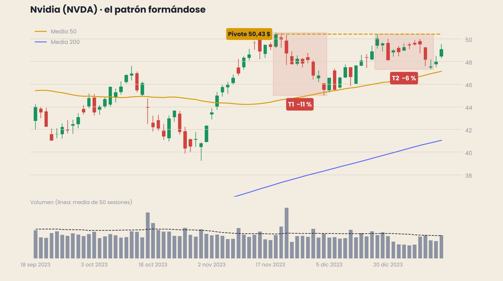
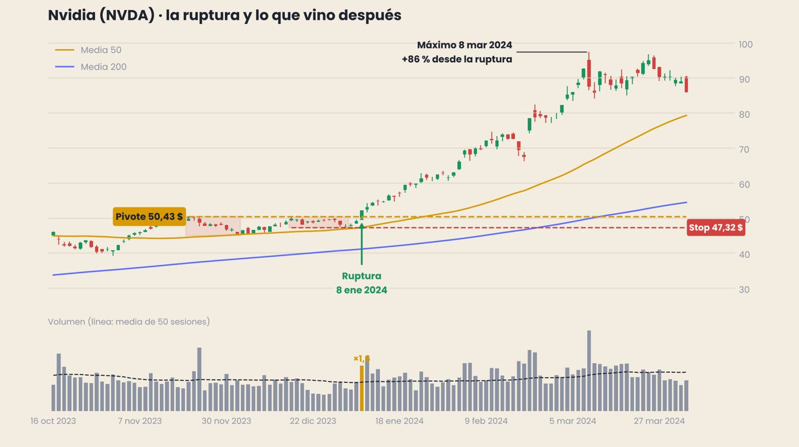

Guía gratuita · Análisis técnico
El patrón de contracción de volatilidad (VCP)
Cómo reconocerlo, cómo operarlo y cuándo falla, con 7 ejemplos reales fechados día a día: Nvidia, Micron, AppLovin, CrowdStrike, MercadoLibre, Uber y Palantir.
Descargar la guía en PDF
Qué vas a encontrar
- Qué es el VCP y por qué funciona: cada caída limpia vendedores.
- Las 8 condiciones de tendencia que deben cumplirse antes de buscar el patrón.
- Las cuatro piezas del patrón: contracciones, mínimos crecientes, volumen y pivote.
- Cómo calcular la entrada, el stop y el tamaño de la posición, con un ejemplo numérico.
- Una checklist de seis preguntas antes de comprar.
- 7 ejemplos reales con dos gráficos cada uno: el patrón formándose y la ruptura.
- Los errores más frecuentes y por qué incluimos dos ejemplos que fallaron.
Así se ve un ejemplo por dentro

Nvidia (NVDA): dos contracciones, del 11 % y del 6,2 %, antes de la ruptura del 8 de enero de 2024.

La ruptura y lo que vino después: el máximo de las 60 sesiones siguientes quedó un 86 % por encima.
Los 7 ejemplos
| Acción | Ruptura | Resultado |
|---|---|---|
| Nvidia | 8 ene 2024 | +86 % |
| Micron | 5 sep 2025 | +98 % |
| AppLovin | 22 ene 2024 | +83 % |
| CrowdStrike | 6 oct 2023 | +48 % |
| MercadoLibre | 2 ago 2024 | +22 % |
| Uber | 3 nov 2025 | Falla: stop al día siguiente |
| Palantir | 17 jun 2024 | Stop y luego +41 % |